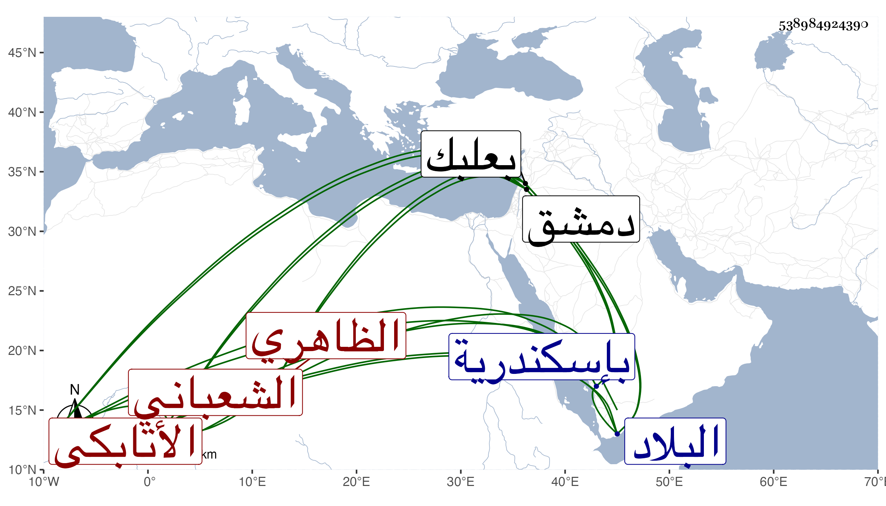

0902Sakhawi.DawLamic.ITO20230111-ara1.EIS1600.538984924390
Biography ID: 538984924390
1090
يشبك الشعباني الأتابكي الظاهري برقوق . رقاه أستاذه إلى التقدمة والخازندارية ثم صار بعده لالاه لابنه الناصر واقلب على الفات الأمراء والجلبان الظاهرية إليه فانضم عليه خلائق ، وحينئذ قام بترشيد الناصر حتى يستبد بالأمور دون الأتابك أيتمش ورسم بنزوله من السلسلة لداره بالقرب من باب الوزير كما كان في أيام الظاهر فثارت الفتنة لذلك وانكسر أيتمش بمن معه وخرج إلى البلاد الشامية فاستقر بيبرس الدوادار أتابكا عوضه ويشبك دوادارا عوض بيبرس وأخذ أمره في التزايد والارتقاء وصار مدبر المملكة إلى أن وثب عليه جكم من عوض وغيره فقاتلوه وقبضوا عليه وسجنوه بإسكندرية في شوال سنة ثلاث وثمانمائة ، واستقر جكم عوضه في الدوادارية ثم وقع بينه وبين سودون طاز أمير آخور فقبض على جكم وحبسه مكان يشبك وأعيد إلى الدوادارية ثم ولاه الناصر بعد عوده إلى الملك أتابكا ثم استوحش منه فخرج عاصيا ووافقه جماعة فخرج إليهم الناصر فهزموه وآل الأمر إلى اختفاء يشبك ثم ظهر بالأمان وأعيد إلى رتبته وسافر إلى البلاد الشامية مع الناصر فلما وصلها قبض عليه هو وشيخ وحبسهما بقلعة دمشق فاحتالا حتى خلصا فوافاهما نوروز على بعلبك فقتل يشبك في يوم الجمعة ثالث عشر ربيع الآخر سنة عشر وأرسل برأسه إلى الناصر فطيف بها وعلقت أياما ، وكان أميرا جليلا كريما وقورا سيوسا ضخما عالي الهمة متجملا في شئونه كلها عفا الله عنه . وقد أغفله ابن خطيب الناصرية فاستدرك ابن قاضي شهبة اسمه خاصة .
